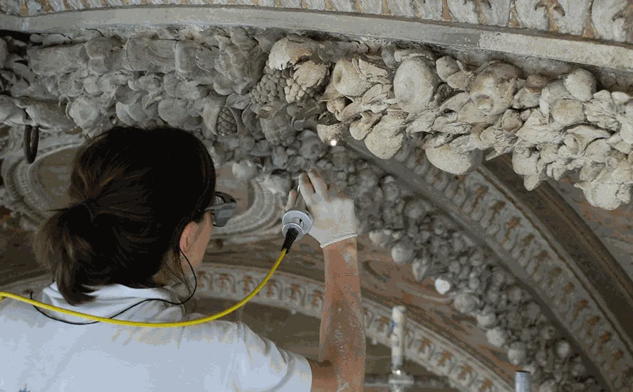

Limpieza con Láser de Estatuas de Piedra: Tecnología y Conservación
La limpieza con láser de estatuas de piedra es una técnica moderna que ha transformado las prácticas de conservación de monumentos y obras de arte en todo el mundo. Esta metodología no solo ofrece una limpieza profunda y precisa, sino que también preserva la integridad estructural de las piezas tratadas. En este artículo, profundizaremos en cómo funciona la limpieza láser, sus ventajas, el proceso paso a paso, y responderemos a las preguntas más frecuentes sobre esta innovadora técnica.
Fundamentos de la Limpieza Láser

La limpieza láser se basa en la emisión de pulsos de luz concentrada que, al impactar sobre la superficie de la estatua, eliminan suciedad, contaminantes y materiales no deseados sin dañar el sustrato de piedra. Este método es altamente selectivo y preciso, lo que permite una limpieza detallada de áreas con relieves y texturas complejas.
Preparación para la Limpieza Láser
Antes de proceder con la limpieza láser, es crucial realizar una evaluación detallada de la estatua. Este análisis incluye la identificación del tipo de piedra, el estado de conservación, y la naturaleza de las sustancias a eliminar. Además, se deben establecer protocolos de seguridad para proteger tanto a los operarios como al entorno de la obra.
Proceso de Limpieza Láser Paso a Paso
La limpieza con láser implica varios pasos, desde la selección del equipo adecuado hasta la aplicación de técnicas específicas que garantizan la eliminación efectiva de la suciedad sin comprometer la piedra. La configuración del láser se ajusta en función del tipo de piedra y la contaminación presente, asegurando una intervención personalizada y eficaz.
Cuidados Post-Limpieza
Tras la limpieza, es esencial implementar un programa de mantenimiento que preserve los resultados obtenidos y proteja la estatua de futuras agresiones. Esto puede incluir la aplicación de protectores superficiales, la regulación de la exposición ambiental, y el monitoreo periódico de la condición de la obra.
Casos de Estudio
A lo largo de los años, la limpieza láser ha sido aplicada con éxito en numerosos proyectos de conservación alrededor del mundo. Estos casos de estudio demuestran la eficacia de la técnica en diferentes tipos de piedra y condiciones de contaminación.
Comparación con Otros Métodos de Limpieza
Aunque existen diversas técnicas de limpieza para estatuas de piedra, la limpieza láser se destaca por su capacidad para eliminar contaminantes sin contacto físico directo, reduciendo el riesgo de abrasión o daño a la superficie.
Impacto Ambiental de la Limpieza Láser
Uno de los aspectos más valorados de la limpieza láser es su bajo impacto ambiental. Al no requerir el uso de químicos o grandes cantidades de agua, esta técnica se alinea con los principios de conservación sostenible.
Costos y Consideraciones Económicas
La inversión inicial en equipos de limpieza láser puede ser significativa, pero los beneficios a largo plazo en términos de eficiencia, efectividad, y preservación del patrimonio cultural justifican el desembolso. Este segmento ofrece un análisis detallado de los costos asociados y las consideraciones económicas para instituciones y conservadores.
Selección del Proveedor de Servicios de Limpieza Láser
Elegir un proveedor de servicios de limpieza láser competente y experimentado es crucial para asegurar el éxito del proyecto. Este apartado brinda criterios clave para tomar la mejor decisión.
Futuro de la Limpieza Láser en Conservación
La tecnología láser continúa evolucionando, ofreciendo nuevas posibilidades para la conservación del patrimonio cultural. Las innovaciones en este campo prometen mejorar aún más la eficacia y accesibilidad de la limpieza láser para proyectos de conservación.
Preguntas Frecuentes
¿Es seguro el método de limpieza láser para todas las estatuas de piedra?
La limpieza láser es segura para la mayoría de las estatuas de piedra, siempre que se realice una evaluación previa y se ajusten los parámetros del láser según el tipo de piedra y las condiciones específicas de la obra.
¿Cuánto tiempo toma limpiar una estatua con láser?
El tiempo necesario para limpiar una estatua con láser varía según el tamaño de la obra, el grado de contaminación y la complejidad de los detalles. Cada proyecto requiere una estimación personalizada basada en estos factores.
¿La limpieza láser puede eliminar todo tipo de suciedad y contaminantes?
La limpieza láser es efectiva contra una amplia gama de contaminantes, incluyendo hollín, depósitos biológicos, pintura, y grafitis. Sin embargo, su eficacia puede variar dependiendo de la naturaleza y la antigüedad de los materiales a eliminar.
¿Qué mantenimiento se requiere después de la limpieza láser?
El mantenimiento post-limpieza incluye la protección de la superficie contra la humedad y la contaminación, así como inspecciones regulares para detectar signos tempranos de deterioro o nueva contaminación.
¿Cómo se comparan los costos de la limpieza láser con otros métodos de limpieza?
Aunque la limpieza láser puede requerir una mayor inversión inicial en comparación con métodos tradicionales, su precisión, eficiencia, y los menores costos de mantenimiento a largo plazo ofrecen una relación costo-beneficio favorable.Conclusiones
La limpieza con láser de estatuas de piedra es una técnica avanzada que representa un equilibrio entre eficacia, preservación del patrimonio, y sostenibilidad. A medida que la tecnología continúa evolucionando, es probable que su aplicación se expanda, ofreciendo nuevas oportunidades para la conservación del patrimonio cultural en todo el mundo.